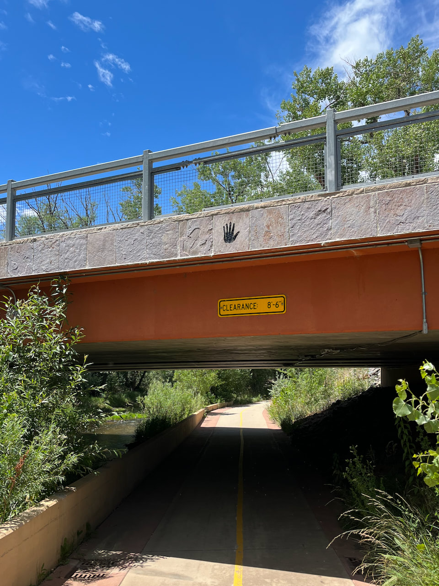

My dad has long been vocal about not enjoying the retirement life in Florida. He’s a native Californian who needs a variety of landscapes, topography, and weather changes to describe in detail every time we talk on the phone. Florida ranged from flat and hot to flat and very hot. But my mom didn’t want to return to California, so when a steal of a house in Colorado showed up in their late night Zillow browsing, allowing them to almost literally meet in the middle, they jumped on it. Cold winters and all.
Prior to their new house, I’d only been to the state a couple times, always staying in Denver. Sometimes, exclusively the Denver airport. So it’s been one pleasant surprise after another, discovering the expansive plains with beautiful mountain backdrops. And since bike culture (part of a general outdoorsy-ness) is so big out here, all this flat land is crisscrossed with excellent bike trails.
One of my parents’ new favorite spots to take a walk is the Sandstone Ranch. We drove out together and looked at the historic buildings, dramatic cliff formations, and a mama deer leading her baby across the St Vrain creek. Then they turned back to their car and let me find my way home. One perfectly maintained trail went along that creek until it met the Left Hand creek, and then another perfectly maintained trail followed that. I crossed a big road, doglegged behind a craft brewery, and all of a sudden I was on the main road leading back into my parents’ neighborhood.
I think I’m a Florida man for good (in more ways than one?) but it’s hard to resist the abundance of flat, paved trails with breathtaking views out here. Many all but leading to your front door.